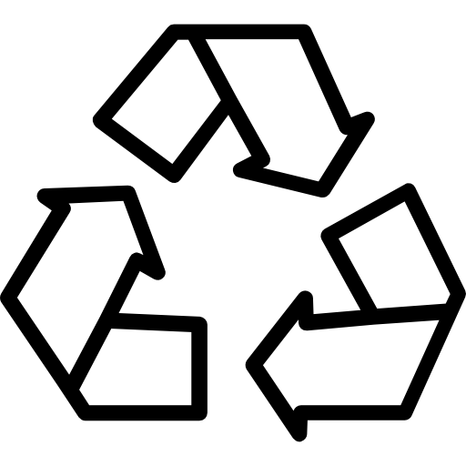
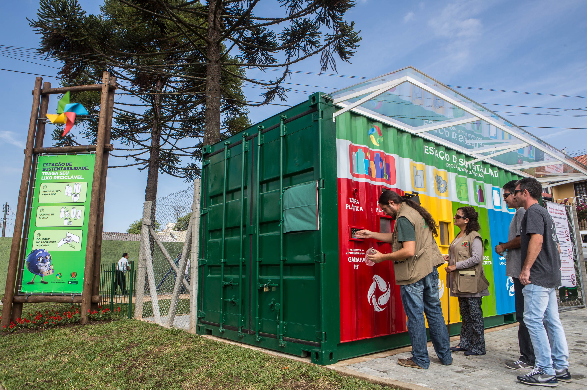

A vida na água é a 14º dos 17 ODS (Objetivos de Desenvolvimento sustentável) publicados e comentados pela ONU (Organização das Nações Unidas), nessa página você verá um pouco sobre a importância da vida marinha, metas e algumas dicas simples de como todos os seres humanos podem ajudar. Se quiser saber um pouco mais sobre as 17 ODS por completo, clique no botão abaixo.
Os oceanos possuem uma grande importância ecológica, econômica, política e sociocultural. São eles responsáveis pelo regulamento do clima, proporcionam alimentação, lazer, transporte e gera renda. Por conta disso, os oceanos são fundamentais para a sobrevivência da espécie humana e de todos os seres vivos do planeta. Os oceanos cobrem mais de 70% da superfície terrestre, somam 97% da água do planeta, concentram um número imenso de espécies, mantêm um grande estoque de alimentos e guardam reservas minerais essenciais.
De acordo com oceanógrafo Jonas Santos, nos últimos anos os oceanos passaram a receber atenção especial no mundo por causa das mudanças climáticas e da consequente elevação do nível dos mares. “O oceano tem e continuará a ter uma influência significativa na regulação do clima, através da absorção, armazenamento e transporte de calor, dióxido de carbono e água. As alterações na circulação do oceano podem produzir mudanças consideráveis, anômalas e talvez irreversíveis no clima da terra”, avalia. Jonas Ricardo ainda mostra que as algas marinhas produzem cerca de 55% do oxigênio do planeta, concorrendo até com a máxima que diz ser a Amazônia o "pulmão do mundo". “O excesso de dióxido de carbono (CO2) na atmosfera é absorvido pelas águas. Por meio da fotossíntese as algas produzem muito mais oxigênio do que precisam, e quando há gás demais na água, ele é liberado para a atmosfera”, explica o oceanógrafo.
O oceano e a humanidade estão fortemente interligados, pois dos oceanos obtemos alimento, medicamentos e recursos vivos e não vivos. Os oceanos criam empregos, produz economia para o país, e desempenha um importante papel na segurança nacional. As praias são nossas principais áreas de recreação. Conhecer mais os oceanos significa também investir na qualidade de vida, pois é sabido que sem eles não há vida. Desenvolver de forma sustentável é um dever de todos!
Dicas
Dicas importantes, acessíveis a todos e que ajuda enormemente nesse combate contra a poluição.
Use menos plásticos
Os plásticos que acabam como detritos oceânicos contribuem para a destruição do habitat, além de emaranhar e matar dezenas de milhares de animais marinhos a cada ano. Para limitar seu impacto, leve sempre com você uma garrafa de água reutilizável, guarde os alimentos em recipientes não descartáveis, leve sua própria sacola de pano ou outra sacola reutilizável ao fazer compras e recicle sempre que possível
Use menos fertilizantes
Quando fertilizantes são usados em jardinagem e agricultura, o excesso acaba no oceano. Um resultado já existente dessa prática é uma “zona morta” – uma área com níveis muito baixos de oxigênio na água – do tamanho de Nova Jersey, nos Estados Unidos. Como toda a vida marinha requer oxigênio para viver, incluindo peixes e camarões, eles precisam fugir da área ou acabam morrendo.
Diminua sua pegada de carbono
Os oceanos absorvem mais de 25% das emissões de dióxido de carbono geradas pelo homem. O resultado é a “acidificação” das águas marinhas, um fenômeno que ameaça uma ampla gama de espécies. Combater a acidificação marinha é igual a combater as mudanças climáticas: precisamos reduzir as emissões de CO2. Opte por se deslocar de bicicleta ou transporte público em vez de usar o carro e diminuir o consumo de energia é um bom começo.
Não descarte óleo no ralo da pia
Se ele estiver limpo, vale reutilizá-lo em um próxima aventura gastronômica. Se estiver sujo, nada de descartá-lo no lixo ou na pia, pois ele é altamente poluente e acaba indo parar nos oceanos. Reserve-o em um recipiente e informe-se sobre pessoas que transformam óleo de cozinha em sabão. Há inclusive carros que passam nas ruas e buscam óleo usado em casa.

Descarte seu lixo de maneira correta
O Brasil continua sendo o 4º maior produtor de lixo plástico do mundo, segundo levantamento da World Wildlife Fund. Por ano, o país produz mais de 11 toneladas e recicla apenas 1,28% desse número. Além disso, 90% da reciclagem feita no Brasil é proveniente da coleta de catadores, ainda tão marginalizados pela sociedade. Se você fizer o mínimo em casa reciclando e descartando da maenira correta, já promove a mudança – mesmo que dependa de um sistema falho de reciclagem. Não desista nem desanime! Você faz a diferença.
Ecopontos
Desenvolver de forma sustentável é um dever de todos!

Descarte correto de resíduos.
O horário de funcionamento é de segunda a sábado, das 8h às 12h; e das 13 às 17 horas. Para o descarte ali, os resíduos devem estar devidamente separados e ser depositados conforme indicação do funcionário presente no local.
Ecoponto Misto - Recebe resíduos de construção civil (caliça), madeiras, restos de podas de árvores e de limpeza de jardins, mobiliários inservíveis, recicláveis, eletroeletrônicos, óleo de cozinha e gordura já usados. São eles: ver
Estação de sustentabilidade
As estações são uma iniciativa da Administração Pública para aumentar a consciência da população quanto à separação Page 2 dos resíduos, estimular a redução da geração e ainda reduzir custos na gestão dos resíduos gerados na zona urbana.
Endereço: R. Pedro Floriano Sobrinho, 487 - Fazendinha, Curitiba - PR, 81330-620 - Telefone: (41) 3350-8484
Título
lalalalalalala
Sobre mim
Concorrendo até com a máxima que diz ser a Amazônia o "pulmão do mundo". “O excesso de dióxido de carbono (CO2) na atmosfera é absorvido pelas águas. Por meio da fotossíntese as algas produzem muito mais oxigênio do que precisam, e quando há gás demais na água, ele é liberado para a atmosfera”, explica o oceanógrafo.